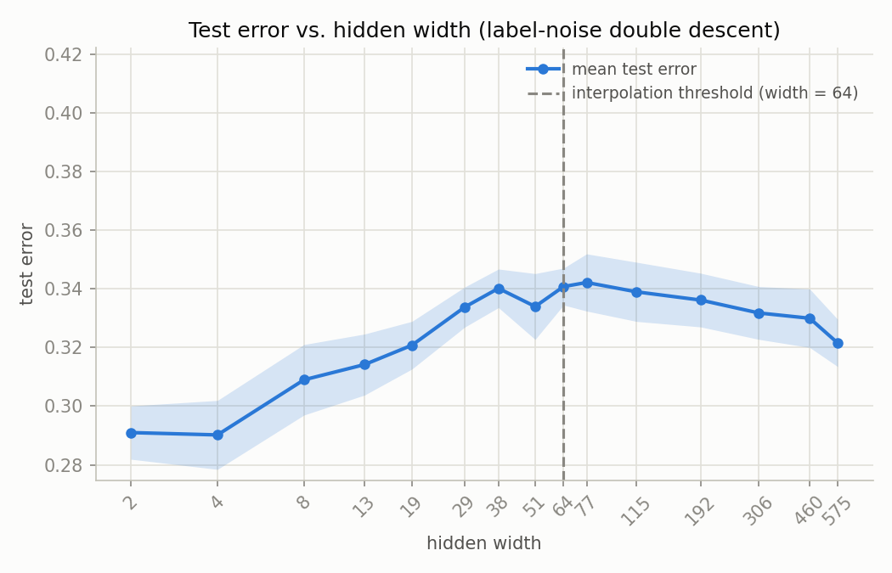
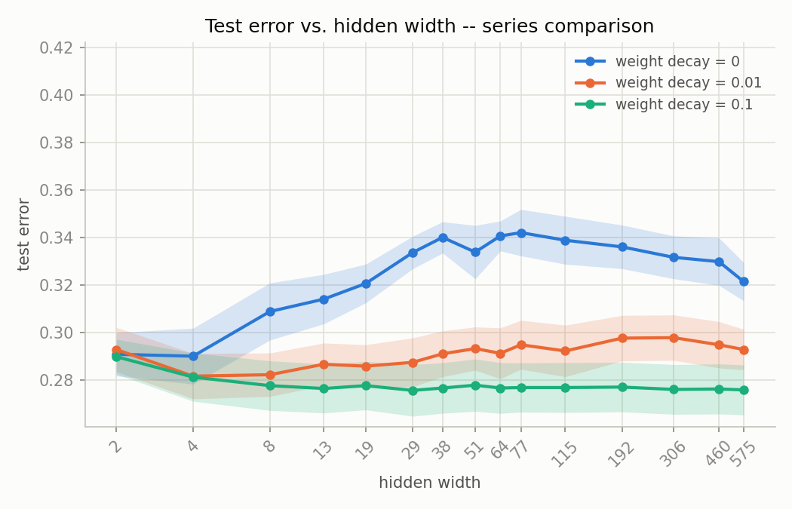
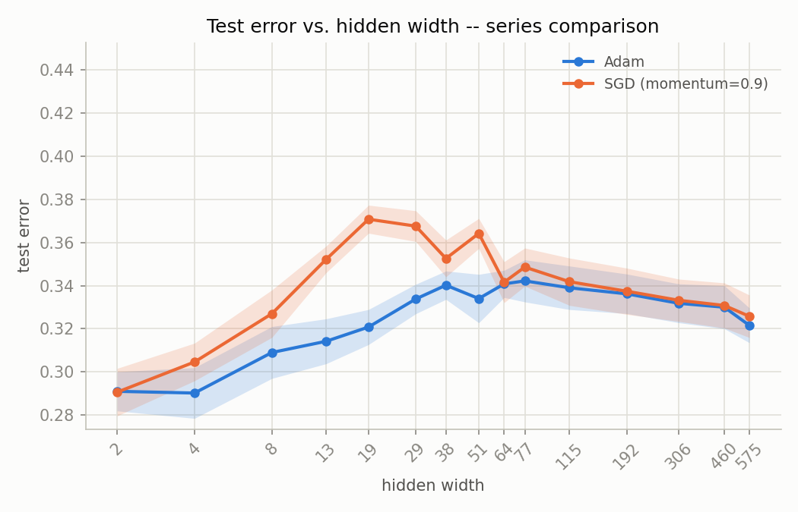
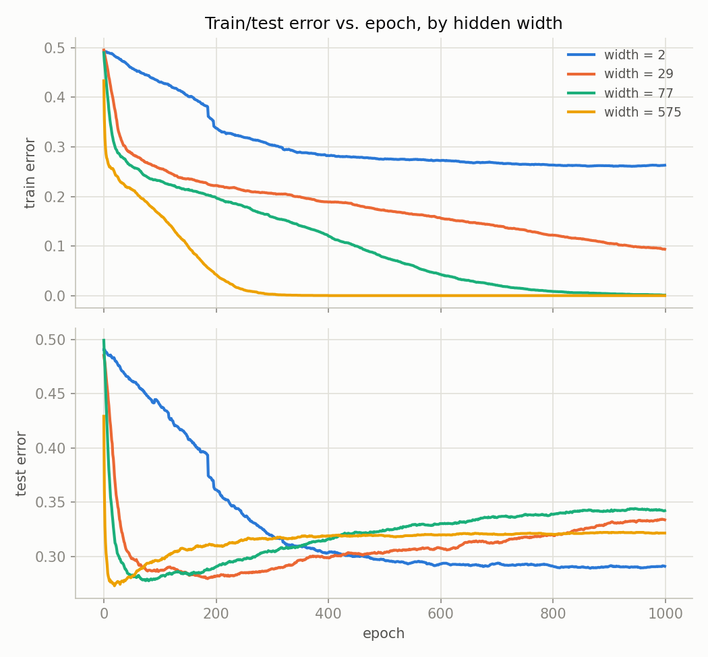
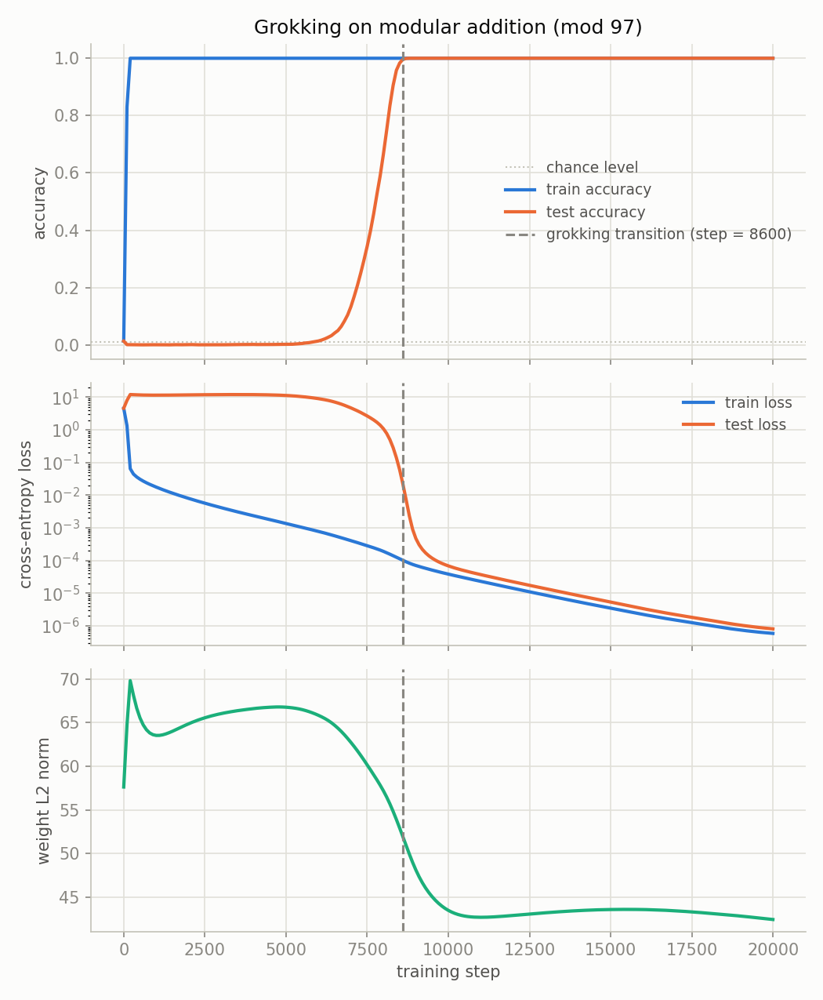
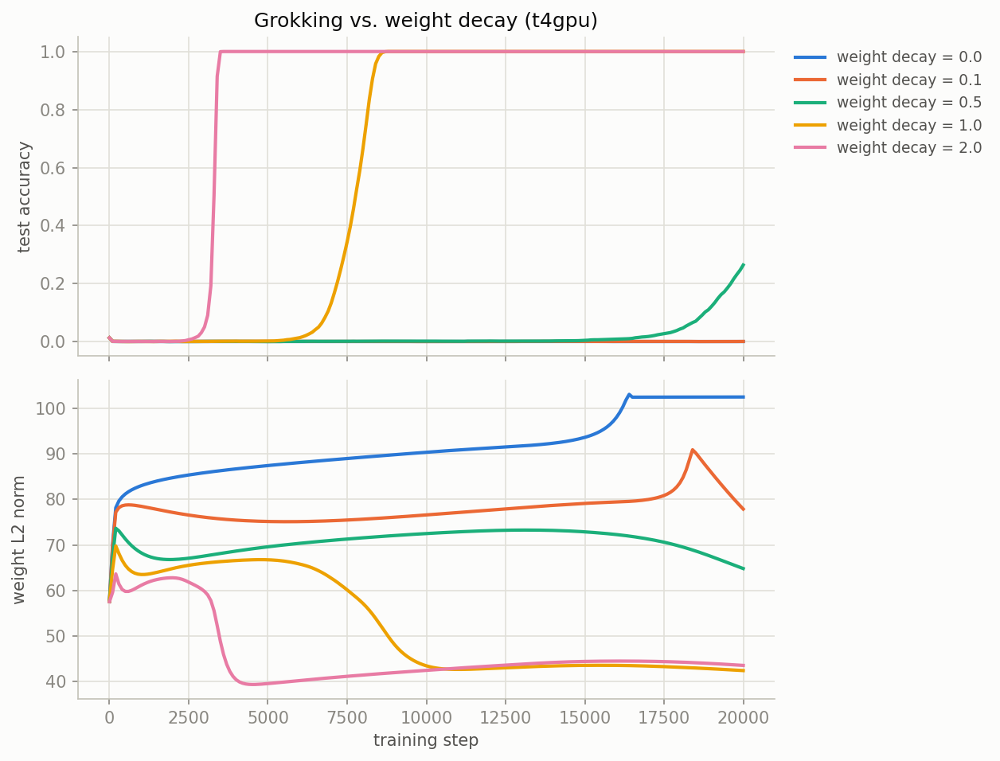
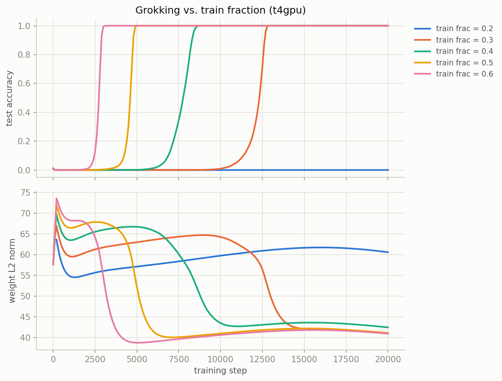
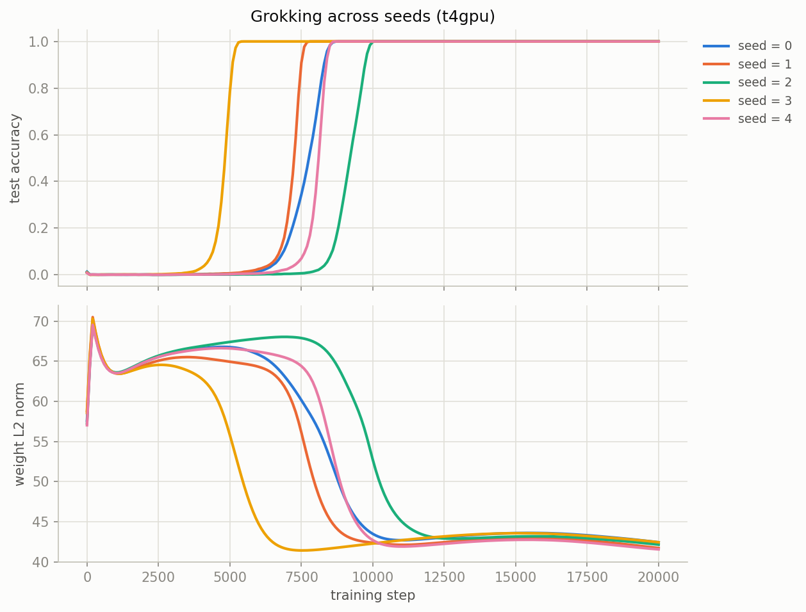

DURATION4.0s
Environment verification
scripts/test_environment.py
============================================================
Environment check summary
============================================================
[PASS] Python version Python 3.13.15
[PASS] NumPy numpy 2.1.3
[PASS] pandas pandas 2.2.3
[PASS] matplotlib matplotlib 3.10.0
[PASS] scikit-learn scikit-learn 1.6.1 (smoke-test accuracy=0.94)
[PASS] PyTorch torch 2.11.0+cu128 - CUDA available - Tesla T4
============================================================
All checks passed. Environment is ready.
DURATION3.5s
Manual backprop gradient check
scripts/gradient_check.py
device = cuda (Tesla T4)
manual loss = 1.225929 autograd loss = 1.225929
param manual_vs_autograd manual_vs_numeric autograd_vs_numeric
---------------------------------------------------------------------
W1 1.881e-08 3.111e-08 2.421e-08
b1 4.238e-08 2.483e-08 4.047e-08
W2 5.522e-08 6.808e-08 3.989e-08
b2 5.064e-08 5.868e-08 3.350e-08
tolerance = 1e-04 -> ALL PASS
Double-descent width sweep
scripts/double_descent_sweep.py · scripts/plot_double_descent.py
Four sweep variants, same data/widths/seeds/epochs| Variant | Optimizer | Weight decay | Duration | Result |
|---|
| Baseline | Adam (lr 1e-3) | 0.0 | 4m 20.8s | peak test error 0.3422 @ width 77; interpolates at width 64 |
| Regularized | Adam (lr 1e-3) | 0.01 | 4m 18.0s | peak test error 0.298 @ width 306; never interpolates (≤1% train err) |
| Regularized | Adam (lr 1e-3) | 0.1 | 4m 16.6s | peak test error 0.29 @ width 2; never interpolates (≤1% train err) |
| Optimizer ablation | SGD (lr 0.1, mom 0.9) | 0.0 | 3m 48.6s | peak test error 0.3708 @ width 19; interpolates at width 29 |

double_descent_t4gpu.png — baseline, mean ±1 SEM across 10 seeds
double_descent_t4gpu_regularization.png — weight decay comparison
double_descent_t4gpu_optimizer.png — Adam vs SGD
double_descent_t4gpu_epochwise.png — train/test error vs epoch by width
Grokking on modular addition (mod 97)
scripts/grokking_train.py · scripts/plot_grokking.py · scripts/plot_grokking_sweep.py
Axis 1 · weight decay (train_frac 0.4, seed 0)| Weight decay | Duration | Transition step | Result |
|---|
| 0.0 | 45.9s | never | never fully grokked (final test_acc 0.0004) |
| 0.1 | 46.9s | never | never fully grokked (final test_acc 0.0007) |
| 0.5 | 46.5s | never | never fully grokked (final test_acc 0.2641) |
| 1.0 | 45.6s | 8600 | grok |
| 2.0 | 46.0s | 3500 | grok |
Axis 2 · train fraction (weight_decay 1.0, seed 0)| Train fraction | Duration | Transition step | Result |
|---|
| 0.2 | 40.7s | never | never fully grokked (final test_acc 0.0007) |
| 0.3 | 40.3s | 12800 | grok |
| 0.4 | 45.6s | 8600 | grok |
| 0.5 | 47.1s | 4900 | grok |
| 0.6 | 47.4s | 3000 | grok |
Axis 3 · random seed (train_frac 0.4, weight_decay 1.0)| Seed | Duration | Transition step | Result |
|---|
| 0 | 45.6s | 8600 | grok |
| 1 | 46.6s | 7700 | grok |
| 2 | 47.4s | 10000 | grok |
| 3 | 45.2s | 5300 | grok |
| 4 | 47.0s | 8600 | grok |
Transition step across 5 seeds: mean 8040, std ≈1555.

grokking_t4gpu.png — baseline: accuracy, loss, weight norm
grokking_t4gpu_weight_decay_sweep.png — vs. weight decay
grokking_t4gpu_train_frac_sweep.png — vs. train fraction
grokking_t4gpu_seed_sweep.png — across seeds